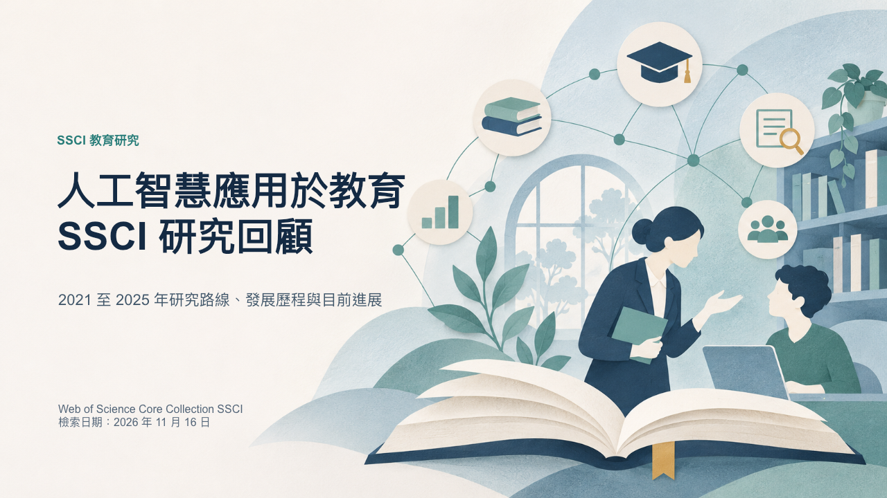

人工智慧應用於教育的 SSCI 研究回顧
口語講稿
約 30 秒繁體中文
這份簡報回顧 2021 至 2025 年收錄於 Web of Science SSCI 的教育研究，聚焦人工智慧在教學中的應用。接下來會依文獻量、研究路線和成效證據，整理領域如何從預測與適性支援，轉向生成式 AI、學習成效和治理議題。
English
This presentation reviews education research on AI indexed in the Web of Science SSCI from 2021 through 2025. We will follow the publication trend and the changing research agenda, from prediction and adaptive support to generative AI, learning outcomes, and governance.